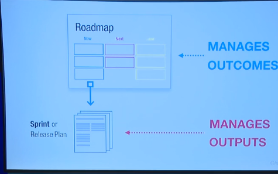
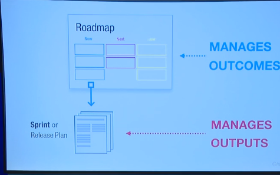

How to set the direction of an organization
This is a summary of the book Product Roadmap Relaunched.
1. What is an organization roadmap?
Set of business objectives that are driven by customer needs. It's a tool for communicating and testing your strategy with customers and stakeholders.
2. What is the value of a roadmap?
It aligns the organization towards shared objectives. It is relatively stable because it focuses on the problem space instead of the solution space (product features).
3. How to build a roadmap?
- Gather customer needs and come up with objectives (OKRs)
- Organize into themes
- Place into time-frames (Q1, Q2, etc)
Drive the product release plan from each theme.
 

4. Resources:
- Summary (30 min video)
- Conversation with Bruce McCarthy, author of Roadmapping Relaunched, and Dan Olsen, author of Product Lean Playbook (40 min video)
- Summary (10 min read)